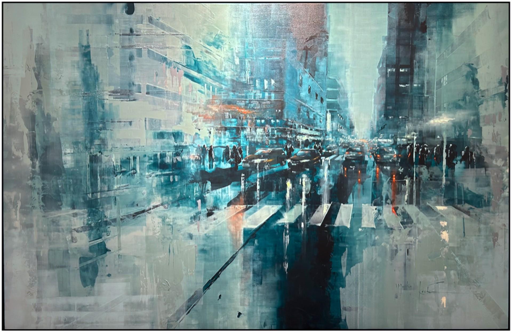

Martin Koester (Köster) was born in Hanover, Germany in 1988 and graduated from Leibniz University of Hanover in 2013. Soon after, Koester began exhibiting throughout Germany.He is an abstraction and realism painter that paints the contrast between dark buildings and bright lights and is fascinated by the beauty when a city transforms at nightfall. Car headlights that dance as lights in the streets, bright restaurant doors that light up the sidewalks – koster believes each of these lights has its own story and he loves to translate these stories into art. “I’ve always been fascinated by light in paintings. When rays of light break out of dark corners and bring the cities to life, I feel beauty. Cities have always fascinated me on my travels. People who live together in a confined space but remain lonely. I try to capture this seclusion in my paintings. Many lights, people and, movement, but still everyone can be alone.”
To feel the pulse of the city, Koester likes to climb the tallest buildings around. On the roofs, Koester paints his city scenes from above, as he likes how much life can be observed from above. He is inspired by the freedom and seclusion of being on the rooftop. When Martin Köster is not painting on a high-rise, his works are created in his studio loft in Germany. Koester uses the photos and sketches he brings back from his city trips for reference. he likes to arrange his works everywhere in his studio, so he be inspired by all the different cities.
 New York